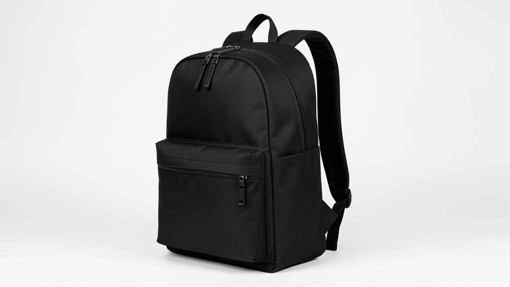

Cách Bắt Đầu Thương Hiệu Túi — Sourcing & Sản Xuất 101
How to Start a Bag Brand — Sourcing & Manufacturing 101
Từ định hình dòng túi đến ra mắt: 7 bước chọn vật liệu, tìm xưởng, MOQ & làm mẫu, sản xuất và reorder. MTS đồng hành từ brief đến hàng giao.
From defining your line to launch: 7 steps for materials, finding a factory, MOQ & sampling, production and reorder. MTS takes you from brief to delivery.
Xưởng Gia Công Túi OEM Tại Việt Nam — Hướng Dẫn Đầy Đủ
OEM Bag Manufacturer Vietnam — Full Guide (MOQ, Lead Time, Cost)
By Nguyễn Mạnh Tùng (Tommy) — Founder & Production Director, MTSUpdated 15/07/20265 min read
QUICK ANSWER
OEM bag manufacturer ở Việt Nam là gì? OEM (Original Equipment Manufacturer) là xưởng sản xuất túi, balo theo thiết kế có sẵn của khách hàng. Minh Tùng Studio (MTS) tại TP.HCM là xưởng khép kín — tự cắt, may, QC và đóng gói. MOQ 300 sản phẩm / SKU, thời gian 10–25 ngày, mẫu thử miễn phí. Phục vụ thương hiệu thời trang, streetwear và startup.
What is an OEM bag manufacturer in Vietnam? An OEM (Original Equipment Manufacturer) produces bags and backpacks according to the buyer's existing designs. MTS in Ho Chi Minh City is a closed-loop factory — we cut, sew, QC, and pack in-house. MOQ 300 pieces/SKU, lead time 10–25 days, free trial samples. We serve fashion brands, streetwear labels, and startups globally.
Tại sao chọn xưởng gia công túi OEM tại Việt Nam?
Why choose an OEM bag manufacturer in Vietnam?
Việt Nam đã trở thành trung tâm sản xuất túi, balo và phụ kiện toàn cầu nhờ chi phí nhân công cạnh tranh, tay nghề may khéo và ưu đãi thuế xuất khẩu Mỹ/EU. Minh Tùng Studio (MTS) là đối tác sản xuất khép kín (closed-loop): cắt, may, kiểm, đóng gói trong một mái nhà.
Vietnam has become a global hub for bag, backpack, and accessory manufacturing thanks to competitive labor cost, skilled sewing craftsmanship, and tariff advantages for export to the US and EU. MTS is a closed-loop manufacturing partner: we cut, sew, QC, and pack under one roof.
OEM: bạn cung cấp thiết kế, tech pack, quy cách vật liệu — chúng tôi sản xuất. ODM: chúng tôi hỗ trợ phát triển thiết kế từ brief, tối ưu vật liệu và gia công. MTS làm cả hai.
OEM: you provide the design, tech pack, and material spec — we produce it. ODM: we help develop the design from your brief. MTS offers both.
Mỗi lô hàng qua: kiểm đầu vào → kiểm trong sản xuất → kiểm trước hoàn thiện → kiểm cuối AQL 2.5 (đường may, phụ kiện kim loại, logo, sạch sẽ, đóng gói). Ảnh gửi khách duyệt trước khi ship.
Every batch passes: incoming material check → in-line check → pre-finish inspection → final AQL 2.5 inspection. Photos sent to clients for approval before shipment.
Nguyễn Mạnh Tùng (Tommy)Founder & Production Director, MTS — writes the OEM/ODM guides from the factory floor.

STARTUP
Cách Bắt Đầu Thương Hiệu Túi — Sourcing & Sản Xuất 101
How to Start a Bag Brand — Sourcing & Manufacturing 101
By Nguyễn Mạnh Tùng (Tommy) — Founder & Production Director, MTSUpdated 15/07/20266 min read
QUICK ANSWER
Làm sao để bắt đầu thương hiệu túi? Bắt đầu từ việc định hình dòng sản phẩm, chọn chất liệu, tìm xưởng sản xuất uy tín tại Việt Nam, hiểu MOQ, đặt mẫu thử, sản xuất lô đầu và ra mắt. Với MTS, bạn chỉ cần MOQ 300 sản phẩm/SKU, mẫu thử miễn phí, và toàn bộ quy trình từ brief đến hàng giao trong 6–8 tuần.
How do I start a bag brand? Start by defining your product line, choosing materials, finding a reliable manufacturer in Vietnam, understanding MOQ and sampling, producing your first run, and launching. With MTS, you need only 300 pcs/SKU MOQ, get free trial samples, and the full process from brief to delivery takes 6–8 weeks.
1Định hình dòng túiDefine your bag line
Bắt đầu bằng trọng tâm rõ ràng: balo, sling, tote, duffel hay phụ kiện da? Chốt 1–3 sản phẩm chủ lực trước khi tìm xưởng.
Start with a clear product focus. Nail down 1–3 hero products before sourcing.
2Chọn vật liệuChoose materials
Canvas (bền, rẻ), da PU (sang, tầm trung), da thật (luxury), nylon/ripstop (nhẹ, kỹ thuật). MTS hỗ trợ cân bằng ngân sách trong giai đoạn ODM.
Canvas (durable, affordable), PU leather (premium, mid cost), real leather (luxury), nylon/ripstop (lightweight). MTS helps balance budget in ODM stage.
Tìm đối tác sản xuất, không chỉ người bán. Kiểm tra: cắt/may/QC tại chỗ? MOQ? Làm mẫu nhanh? Ảnh xưởng thật? Dấu hiệu lừa: bên thương mại không show được xưởng.
Look for a production partner. Check: in-house cut/sew/QC? MOQ? Fast sampling? Real factory photos? Red flag: traders who can't show the floor.
4MOQ & làm mẫuMOQ & sampling
Xưởng lớn đòi 1.000–5.000; rủi ro với brand mới. MOQ MTS là 300/SKU kèm mẫu thử miễn phí. Luôn đòi mẫu thật trước sản xuất hàng loạt.
Large factories demand 1,000–5,000. MTS MOQ is 300/SKU with a free trial sample. Always request a physical sample first.
5Ngân sách & tiến độBudget & timeline
Hạng mục
Thời gian
Làm mẫu
7–14 ngày
Sản xuất
10–25 ngày
Vận chuyển
tùy phương thức
Tính 6–8 tuần từ brief đến hàng giao cho lô đầu.
Plan 6–8 weeks from brief to delivered goods for a first run.
6Sản xuất & QCProduction & QC
Sau khi duyệt mẫu, bắt đầu sản xuất. Đòi kiểm AQL 2.5 và duyệt ảnh trước khi ship. MTS gửi ảnh QC từng giai đoạn.
After sample approval, production begins. Insist on AQL 2.5 and photo approval. MTS sends QC photos at every stage.
7Ra mắt & đặt lạiLaunch & reorder
Thử thị trường, thu feedback, rồi đặt lại. Mở rộng từ 300 lên 1.000+ được giá tốt hơn.
Test the market, gather feedback, then reorder. Scaling from 300 to 1,000+ unlocks better pricing.